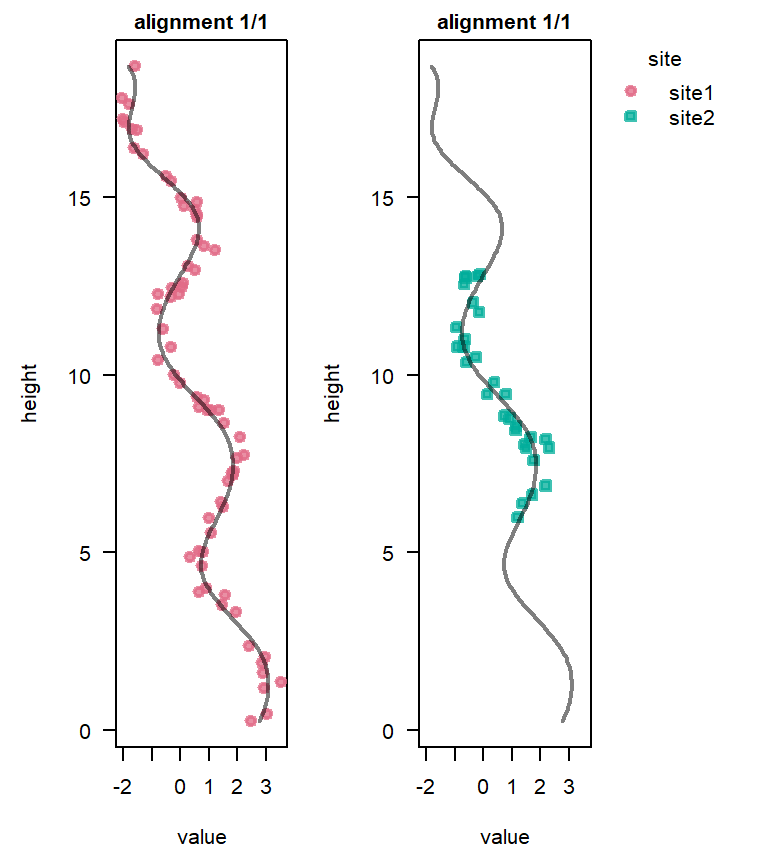

library("StratoBayes")How to use ‘StratoBayes’
StratoBayes is an R package for correlating and dating geological data. For more information, please visit https://stratobayes.github.io.
This guide walks you through the process of aligning geological data from multiple sites, using StratoBayes. Please let us know if you have any issues or suggestions on improving this documentation.
Before proceeding, please ensure that you have installed StratoBayes. This vignette assumes that the package is installed and that you are running the provided code chunks in an R environment (e.g., RStudio).
We start by loading the library:
Setting a random seed ensures the consistency of results:
set.seed(0)Loading the data
The function StratData() is used for loading data containing the geological signal used for correlation, and, optionally, dates and partitioning information. The function can read CSV files directly, if the paths to the files are specified. Alternatively, R data.frames can be provided as input.
Here, we use the signalData0 data.frame included in this package, containing a simulated signal recorded at two sites:
head(signalData0)
## site height value
## 1 site1 16.902344 -1.5092049
## 2 site1 5.004720 0.8027955
## 3 site1 7.014370 1.6707740
## 4 site1 10.798032 -0.3173079
## 5 site1 17.119314 -1.9677405
## 6 site1 3.801615 1.5792926We can transform it into a StratData object, which tabulates the information in the format required to run a stratigraphic model, with StratData():
stratDat <- StratData(signal = signalData0)Alternatively, we can read the data directly from a csv file:
csvPath <- system.file("extdata", "signalData0.csv", package = "StratoBayes")
stratDat <- StratData(signal = csvPath)We can use the plot() method to visualize the raw data:
plot(stratDat)Model set-up
Now, we want to specify a stratigraphic correlation model that takes Site 1 as the reference section, and shifts and stretches the signal of Site 2 to achieve the best possible fit to the data of Site 1.
The nature of the data informs the type of model we might use. In this case, we have no absolute age information, such as radiometric dates. We will thus fit the model on the “height” scale.
See Age scale correlation and age modelling for an example with absolute ages.
Furthermore, we don’t have information on potential sedimentation rate changes within the sections, e.g. due to lithology changes. We will therefore chose a simple model that assumes a uniform sedimentation rate within each section, but allows for sedimentation rates to differ from site to site.
See Partitioning data for examples with sedimentation rate changes within sections.
The model used here will employ two parameters, denoting the offset of Site 2 relative to Site 1, \(\alpha_{site2}\), and the natural logarithm of the sedimentation rate of Site 2, relative to Site 1, \(\ln(\gamma_{site2})\). The reference site Site 1 remains unchanged. In this model, a sedimentation rate of \(\ln(\gamma_{site2}) = \ln(3) \approx 1.1\) would mean that the sedimentation rate of Site 2 is three times as high as that of Site 1. Using the log-scale for the rate parameters ensures that the prior on the rate is symmetric; a doubling or halving of the rate has equivalent distances on the log-scale.
Priors
As we are working in a Bayesian framework, we need to specify priors for those two parameters. The helper function StratModelTemplate() will tell us which priors we need to specify, and provides the code needed to run the model. When calling this function, we will specify that our model should be on the height scale (alignmentscale = "height"), since we don’t have dates in our data set, and that our sedimentation rate model will assume a different sedimentation rate at each site (sedModel = "site"). We further specify that the offset of Site 2 relative to Site 1, \(\alpha_{site2}\), refers to the middle of Site 2 (alphaPosition = "middle"). Here, we will use a uniform prior on the \(\alpha\) parameter, and a normal prior on the \(\ln(\gamma)\) parameters:
StratModelTemplate(
stratDat,
alignmentScale = "height",
sedModel = "site",
alphaPosition = "middle",
alpha = "uniform",
gammaLog = "normal"
)
##
## priors <- structure(list(
## "alpha_site2" = UniformPrior(min = , max = ),
## "gammaLog_site2" = NormalPrior(mean = , sd = )),
## class = c("StratPrior", "list"))
##
## model <- StratModel(stratData = stratDat,
## priors = priors,
## alignmentScale = "height",
## sedModel = "site",
## alphaPosition = "middle",
## nKnots = 25)
##
## result <- RunStratModel(stratObject = stratDat,
## stratModel = model,
## nRun = 1,
## nIter = 1000)Now, we can copy this template into our script and fill in the priors with appropriate values Our reference section spans the interval from 0.25 to 18.7 m. Using these as the min and max values for the uniform prior on \(\alpha_{site2}\) means that the mid height of Site 2 may fall anywhere within the height range of Site 1. For the normal prior on the log of the sedimentation rate of Site 1 relative to Site 2 we use a mean of 0 (a log sedimentation rate of 0 corresponds to a relative sedimentation rate of 1, i.e. no stretching or squeezing of the signal). We set the standard deviation to ln 2, which places ~68% of the prior probability of this parameter on sedimentation rates between 0.5 and 2.0, with the remaining 32% being allocated to more extreme relative sedimentation rates.
priors <- structure(list(
"alpha_site2" = UniformPrior(min = 0.25, max = 18.7),
"gammaLog_site2" = NormalPrior(mean = 0, sd = log(2))),
class = c("StratPrior", "list"))The model object
Before being able to run the model, we have to create a model object. We can simply use the code suggested by the StratModelTemplate function, but because we have a small data set, we will decrease the number of knots for the splines to 10 (nKnots = 10), which will reduce the run time. Larger, more complicated data sets likely require more knots for the spline to fit the data well.
model <- StratModel(stratData = stratDat,
priors = priors,
alignmentScale = "height",
sedModel = "site",
alphaPosition = "middle",
nKnots = 10)Running the model
We will estimate the parameter values with the RunStratModel() function by running a Markov chain Monte Carlo (MCMC) simulation to draw from the posterior of the model. nIter specifies the number of iterations to run. The more complicated the model is, the more iterations will be necessary to collect a sufficient number of independent samples from the posterior distribution. Here, we run it for 2,000 iterations. Samples from an MCMC are usually autocorrelated, so we use the nThin parameter to thin the samples and keep only every 10th sample by setting nThin = 10. nRun determines how many independent model runs will be conducted. To evaluate whether the model has converged, it is useful to have at least 3 independent model runs starting from different parameter values. Setting runParallel to TRUE allows to process each run on a separate CPU core, which can drastically improves overall run times. This requires installation of the foreach and the doParallel R packages. Note that progress bars don’t work when doing parallel runs. Instead, StratoBayes attempts to display model alignments and iteration counts in a browser window when runParallel = TRUE. If you want to just do a single run, or several runs sequentially, set runParallel to FALSE.
runParallel <- requireNamespace("doParallel", quietly = TRUE) &&
parallel::detectCores() > 1
runParallel
## [1] TRUEWe run the model using the RunStratModel() function:
result <- RunStratModel(stratObject = stratDat,
stratModel = model,
nRun = 3,
nIter = 2000,
nThin = 10,
runParallel = runParallel)Processing and analysing the results
result is now an object of class StratPosterior, which we can examine using the print(), summary(), and various plot methods. This particular result is also available for use in examples, without running the model, as package data stratPosterior0.
result
## Posterior of stratigraphic model from 3 runs after 1000 iterations:
## Samples: 603 (201 per run)
##
## The model has 2 age-height parameters:
## alpha_site2, gammaLog_site2
##
## Alignment scale: height
## Sedimentation model: site
## Alpha position: NA, 8.62
## Knots for spline: 10Checking for convergence
The first thing to do with the result of the model run is to check for convergence. Convergence means that the chains have reached a state were they are no longer influenced by their starting values, and they have thoroughly explored the parameter space. We also want to make sure that the chains are mixing well. This can be visually assessed with trace plots.
To plot the trace of \(\alpha_{site2}\) and \(\ln \gamma_{site2}\), we can run:
TracePlot(result, parameters = 1:2)Visual inspection of the trace plot shows that the chains are showing stable and overlapping patterns, suggesting that they have reached a stationary distribution and converged. For more information on assessing convergence, see Gelman et al. 2016, Chapter 11.4.
Plotting alignments
The plot() function displays the alignment corresponding to an approximate multivariate median of the converted heights (see Eichenseer et al. 2025). If a Cluster analysis reveals more than one distinct possible alignment, the most likely alignment is shown by default.
plot(result, alignment = "all")
Model run summary
The summary() function generates a summary of information from the model run. If more than one cluster of possible alignments has been identified, it will display information for each alignment cluster.
summary(result)
##
## Posterior of stratigraphic model from 3 runs after 1000 iterations:
##
## Total samples: 603 (201 per run).
## Statistics summarise 300 samples (100 per run), after discarding the first 50% of
## iterations from each run as burn-in.
## The acceptance rate of proposals across the selected iterations was 26%.
## 'ess' is a measure of effective sample size, using coda::effectiveSize().
##
## Potential scale reduction factor: (Convergence when ~1.00)
## alpha_site2 0.98695
## gammaLog_site2 0.99650
## lambda_value 0.99289
## log prior 0.99415
## log likelihood 1.00350
## log posterior 0.99821
##
## Summary statistics for alignment 1 (of 1 alignments), comprising 300 samples (100%):
## Multivariate effective sample size of age-height parameters, using
## mcmcse::multiESS(): 221.6
## mean sd 2.5% 25% 50% 75% 97.5%
## alpha_site2 9.4793 0.12820 9.2237 9.3931 9.4834 9.5659 9.7293
## gammaLog_site2 1.02157 0.06753 0.90004 0.98159 1.01990 1.06168 1.17065
## lambda_value 1.27054 0.52861 0.38004 0.87330 1.22261 1.66281 2.38439
## log prior -54.6593 2.48593 -60.6952 -55.9351 -54.6993 -53.4221 -51.0014
## log likelihood -10.5708 3.44423 -18.4717 -12.3448 -9.9689 -8.10230 -5.36462
## log posterior -65.2301 2.74834 -71.6141 -66.8425 -64.7992 -63.3411 -61.1239
## ess
## alpha_site2 147.073
## gammaLog_site2 235.008
## lambda_value 300.000
## log prior 234.090
## log likelihood 229.736
## log posterior 248.173Stratigraphic mapping
With our age model, we can now convert any height from Site 2 to the height scale of our reference section Site 1 using the StratMap() function. For example, to give us the heights in section_1 corresponding to a height of 1 m in Site 2, we can use:
StratMap(result, heights = 1, site = "site2")
## height mean sd 2.5% 50% 97.5%
## 1 1 6.728533 0.258385 6.256851 6.708606 7.218249This tells us that a height of 1 m at Site 2 would correspond to a mean height of 6.7 m at Site 1, for this alignment.
We can visualise the stratigraphic mapping of heights from Site 2 to the reference height scale from Site 1 using the StratMapPlot() function:
StratMapPlot(result, site = "site2")Summary
Our model run identified the alignment that results in the best match of the proxy records from Site 1 and Site 1, and estimated the uncertainty associated with that alignment. The median sedimentation rate of Site 2 relative to Site 1, \(\gamma_{site2} = \exp(\ln\gamma_{site2})\), has been estimated at 2.8, meaning the analysis has “squeezed” the record of Site 2 by a factor of 2.8 to match that of Site 1.
Next steps
- Partitioning data allows sedimentation rate changes and/or hiatuses, enabling more accurate correlations
- Tie points can improve correlations where available
- Age scale correlation and age modelling allows for dating sections using absolute age constraints